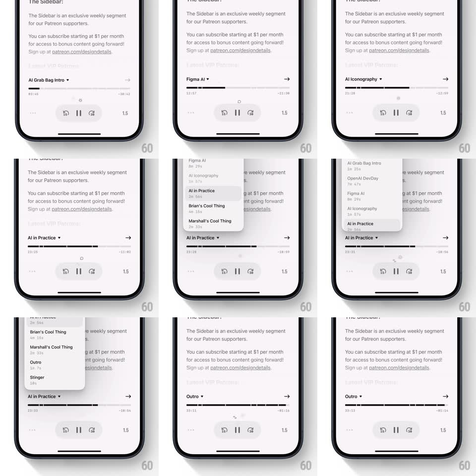

Media
Frame-by-frame

Rebuild this interaction 1:1: Queue's chapter switch - the podcast player page shows the current chapter title above a segmented progress bar; tapping the title opens a bottom-sheet chapter list, and picking a chapter snaps the playhead and re-lights the bar's segments.

Rebuild this interaction 1:1: Queue's chapter switch - the podcast player page shows the current chapter title above a segmented progress bar; tapping the title opens a bottom-sheet chapter list, and picking a chapter snaps the playhead and re-lights the bar's segments.
## Integration
Integration: stack-agnostic spec - springs given as stiffness/damping, timed motions as duration + curve; map every value to your framework and animation library of choice.
## Scene
A light podcast player: episode description text above ("This week, we talk about Open AI's GPTs..."), then a chapter row ("The Sidebar v" title with a chevron, arrow right), the segmented progress bar (segments of varying widths, one filled black up to the playhead, elapsed and remaining times below), transport controls (sleep, skip back, play/pause, skip forward, 1.5x speed).
## Motion spec
Pattern: segmented progress + chapter sheet selector.
- Playback fills the current chapter's segment left to right; segments before it sit filled, after it sit grey.
- Tap the chapter title: a bottom sheet rises (spring ~340/24, 350ms) listing every chapter with its duration ("AI Iconography 3m 57s", "Brian's Cool Thing 4m 15s", "Outro 2m 7s", "Stinger 10s") - the current chapter is highlighted.
- Tap a chapter: the sheet slides down (280ms, ease-in), the player title crossfades to the new chapter (200ms), and the progress bar re-segments: the playhead jumps to the chapter start with a quick seek sweep (fill animates, 250ms).
- The chapter row title swaps with a short vertical slide (old text out up, new text in from below, 180ms).
## Calibration
- Segments are proportional to real chapter lengths - a 10-second stinger is a sliver.
- Sheet selection is instant-feeling - no artificial delay between tap and seek.
## Reduced motion
Sheet fades in/out; title swaps with a crossfade.
## Don't miss
- The chevron on the chapter row flips up while the sheet is open.
- Elapsed/remaining labels re-count from the new chapter boundary, not the episode start.